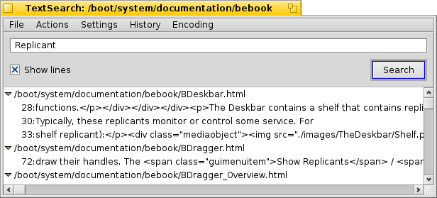

中文 ［中文］
中文 ［中文］ Català
Català Deutsch
Deutsch English
English Español
Español Français
Français Italiano
Italiano Magyar
Magyar Polski
Polski Português
Português Português (Brazil)
Português (Brazil) Română
Română Slovenčina
Slovenčina Suomi
Suomi Svenska
Svenska Русский
Русский Українська
Українська 日本語
日本語 文本搜索
文本搜索
| 桌面栏： | 没有入口，通常通过Tracker的附加组进行启动 | |
| 位置： | /boot/system/apps/TextSearch | |
| 设置： | ~/config/settings/TextSearch |
文本搜索用于查询文本文件中的字符串。通常，它通过选中文件或者文件夹右键菜单的 Tracker附加组件 实现启动。
在顶部的文本框中输入搜索的字符，然后按下RETURN 或者点击 启动搜索。如果选中了 ，匹配记录将会自动展开，显示包含该搜索字符的文件。
对于其他的菜单项，在下面将会给出相应的解释：
File 菜单 | ||||
| ALT N | 打开新窗口，您可以输入其他的字符，然后在相同的文件/文件夹中进行搜索。 | |||
| ALT F | 让你选择新的目标文件和文件夹进行搜索。 | |||
Action 菜单 | ||||
| ALT T | 删除列表中目前未选中的所有项目。 | |||
| ALT O | 在首选程序中打开当前选中文件（与双击文件相同）。 如果它支持文本编辑器（例如 Pe），您可以跳转至匹配字符所在的确切的行。 | |||
| ALT K | 在 Tracker 中打开当前选中文件所在的文件夹。 | |||
| ALT B | 复制当前选中项目至剪贴板。 | |||
Settings 菜单 | ||||
| 如果处在 “unixy” 环境下，所有的管理员文件隐藏在 “.folders/” 下，它将会非常有用。 源版本控制系统 SVN 和 CVS 属于此类程序，而且在Haiku中使用非常广泛。 | ||||
| 文本搜索使用了命令行工具 grep。对于它，特殊字符如 '"*\$?! 以及空格必须要使用 \ 来进行控制显示。而撤销该设置则意味着您必须手动的进行操作，但是作为交换，它给予了您强大的 正则表达式。 | ||||
| 文本搜索目前仅可用于查找普通文本文件中的字符。如果撤销该设置，它将会对所有类型的文件进行搜索。 | ||||
History 菜单 | ||||
| 包含最近查询的字符。 | ||||
Encoding 菜单 | ||||
| 根据需要选择不同的字符编码。 | ||||